Intressen
Ja, här har vi väl några top sex musikartister och TV-spel, vad det gäller mina preferenser (och beroenden). Jag gillar lyssna på mycket svensk punk, emo-rock, metal (särskilt innom fantasyfolklajvvikingblackdeathindustrialcoremetalsubgenren) och en eventuell jazz eller två. Nedan listas sex stycken.
Vad det gäller spel gillar jag lite olika sorters spel beroende på humör. Jag är ofta på humör för något kreativt eller något rougelike spel, varav min favorit är The Binding of Isaac: Repentence + Beta, men även andra sådana spel spelas av mig då och då. Jag älskar att bygga och pyssla och skapa på olika sätt, via spel, ord eller annat. Längst ned på denna sida kan du läsa en av mina dikter, om du så vill.
Musik
Weezer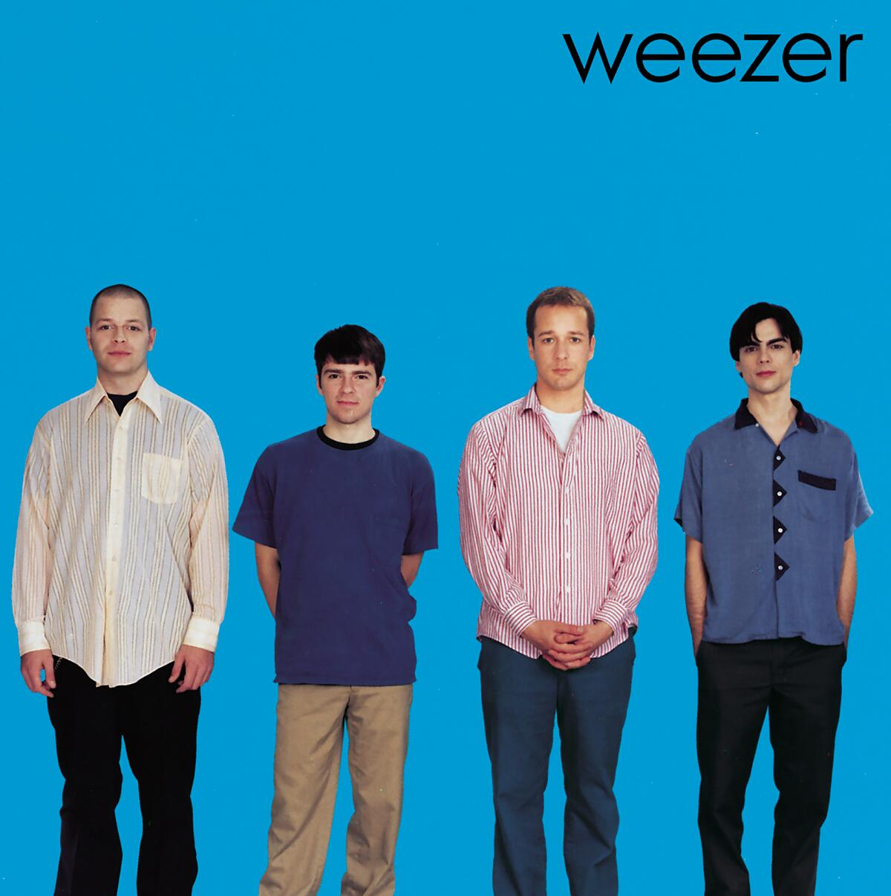
My Chemical Romance 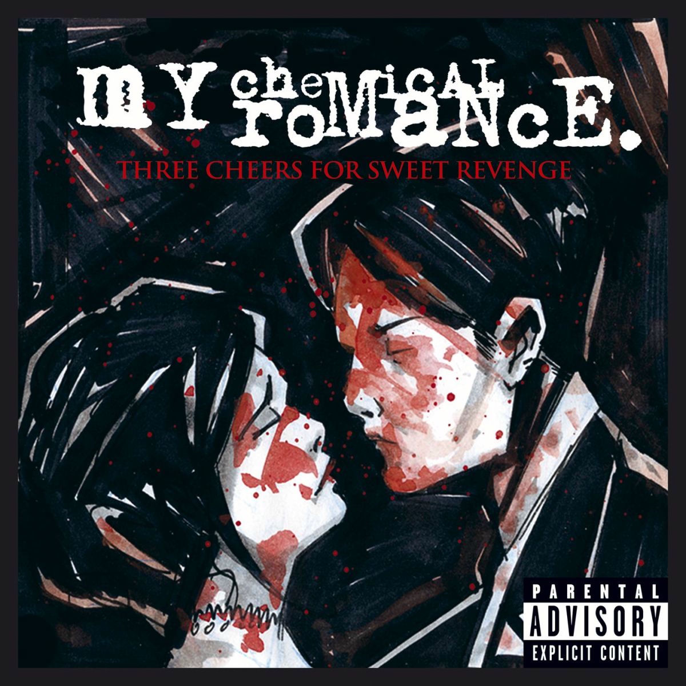
Dia Psalma 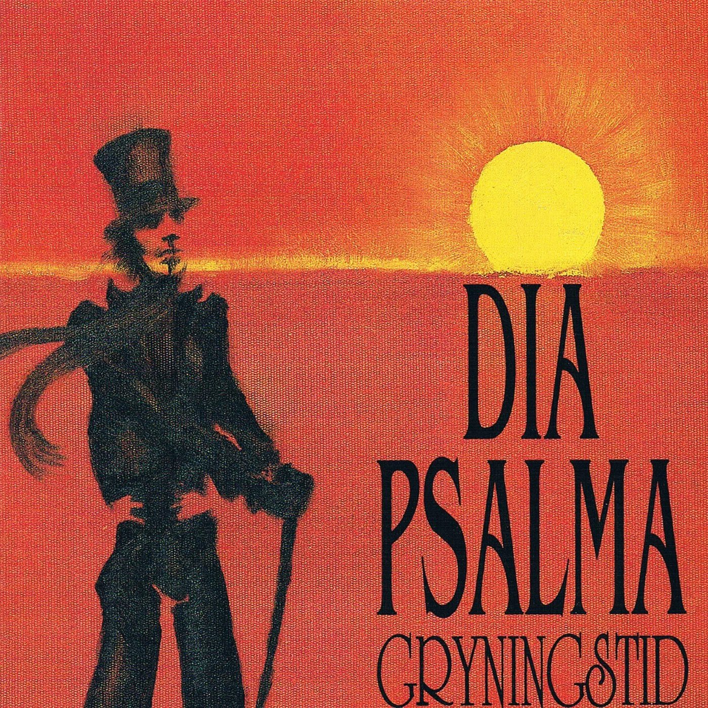
De Lyckliga Kompisarna 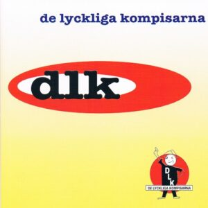
Ormbarst 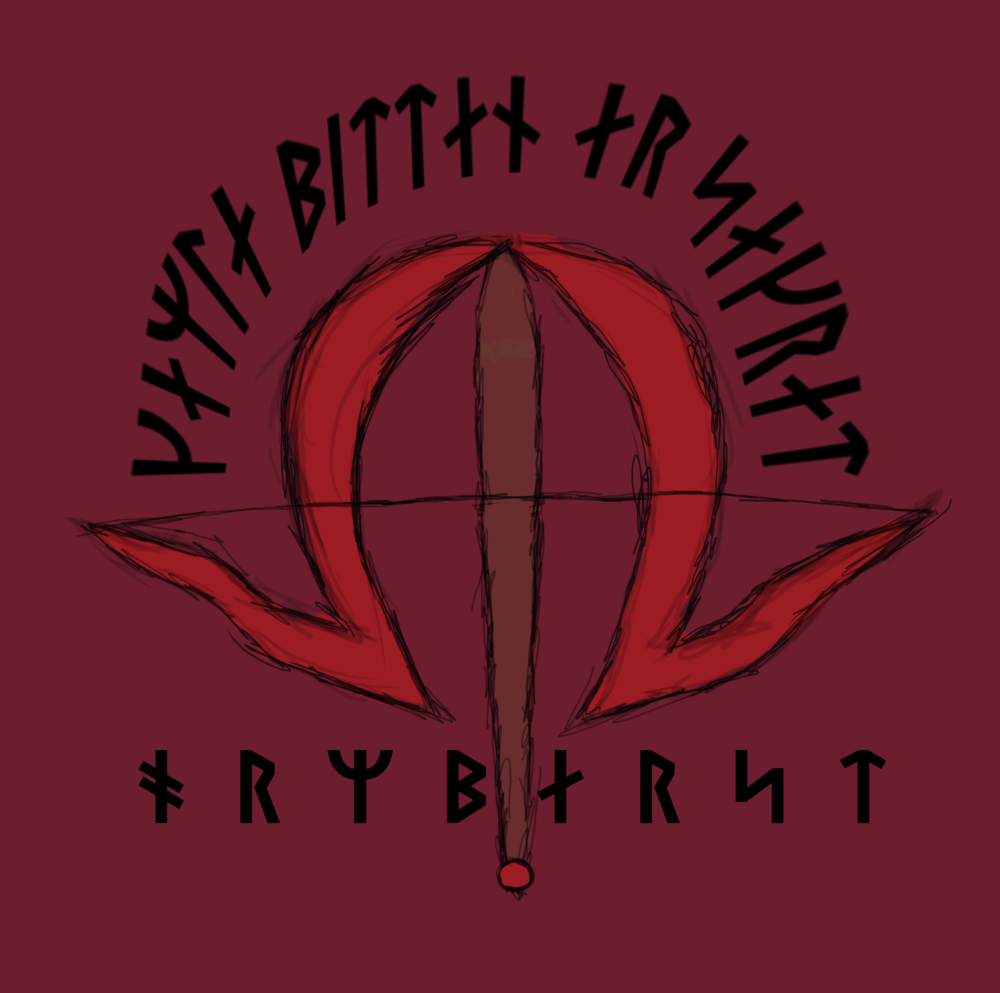
Dålig Isolering 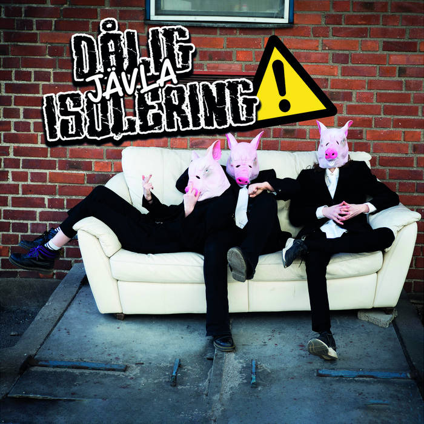
Spel
The Binding of Isaac: Repentence+ Beta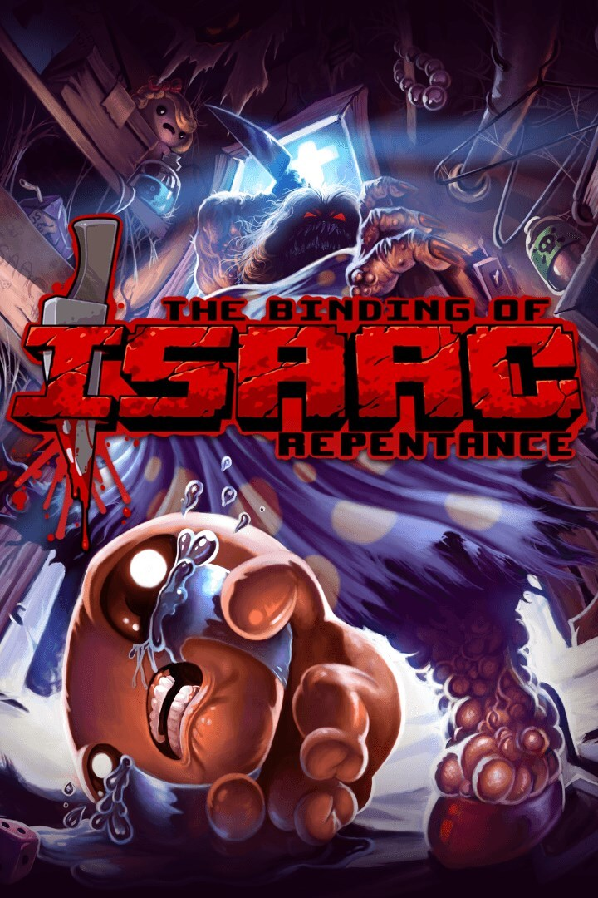Minecraft 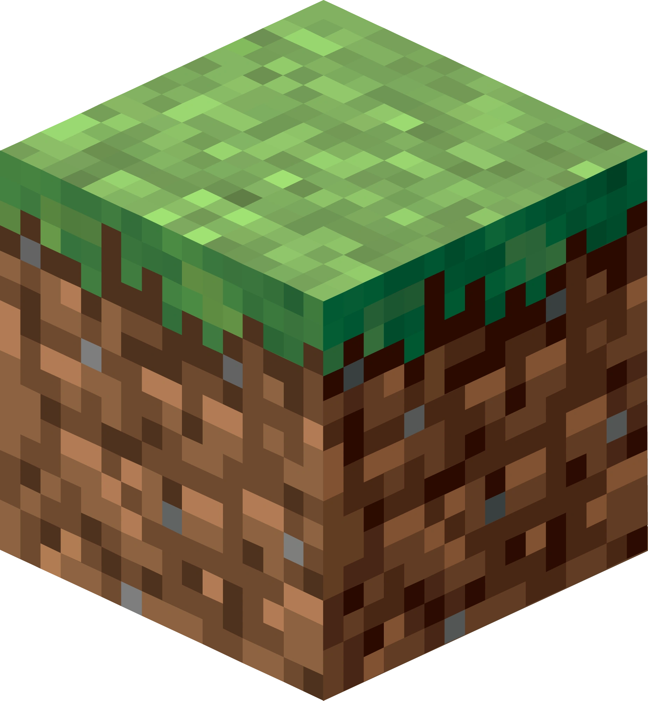
Guilty Gear 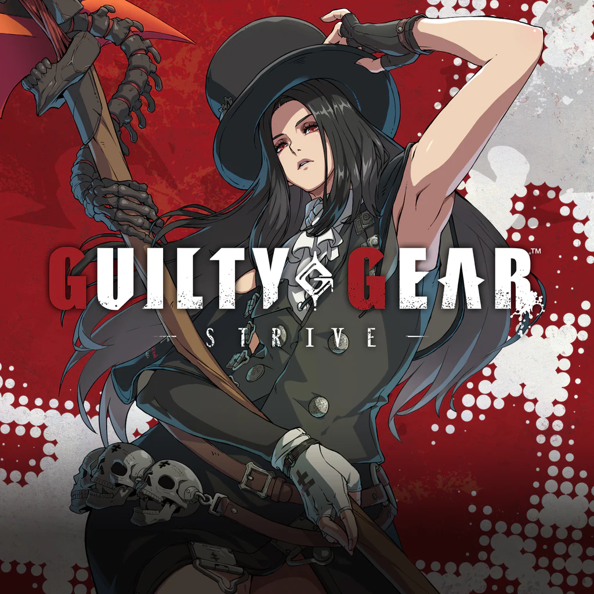
Persona 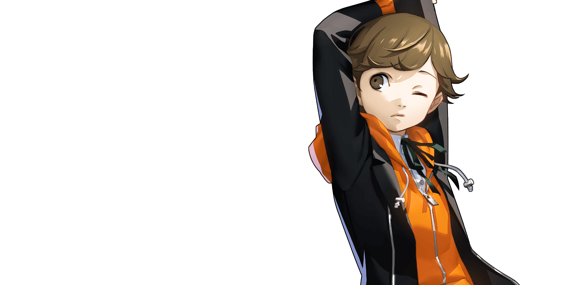
Peggle 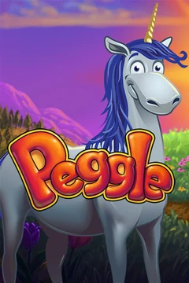
Super Majo 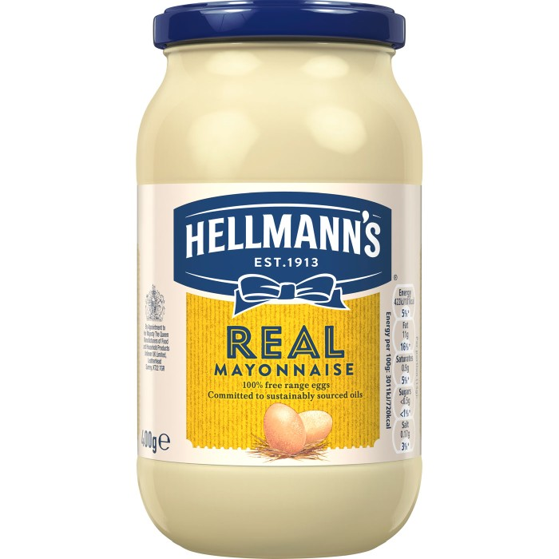
Bravery
I’ve seen many flowers before this
My thoughts flows
Without amnesia
Never before have I seen one like this
It’s stalk is of the Rose
It’s petals are of the Freesia
I don’t seem to know what to make of this
It might lead to lows
I don’t have analgesia
Whatever this is, I’ll never get rid of this
Beautiful flower; neither a Rose
and neither a Freesia
It’s worth a shot, I can rescue this
It won’t make me meet Thanatos
And if it does, I’ll go to Elysia